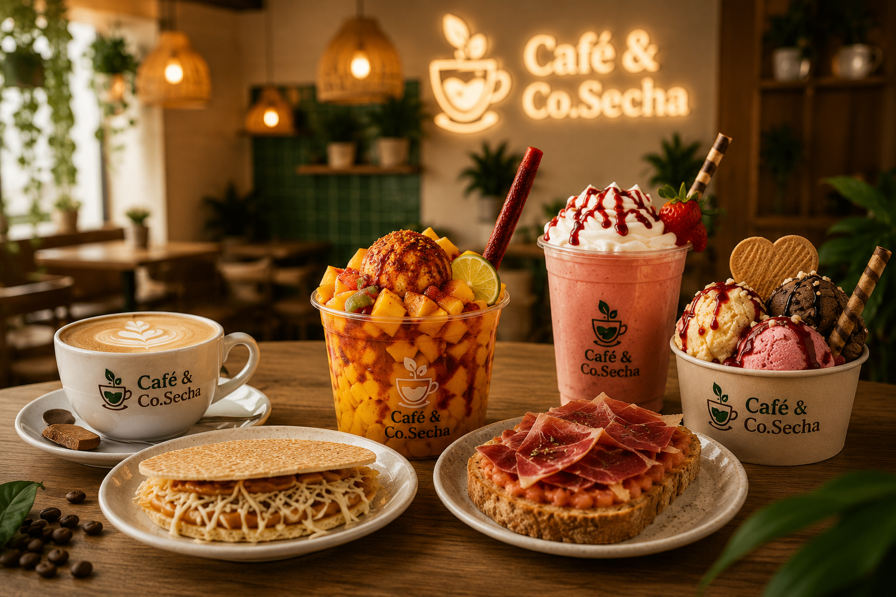
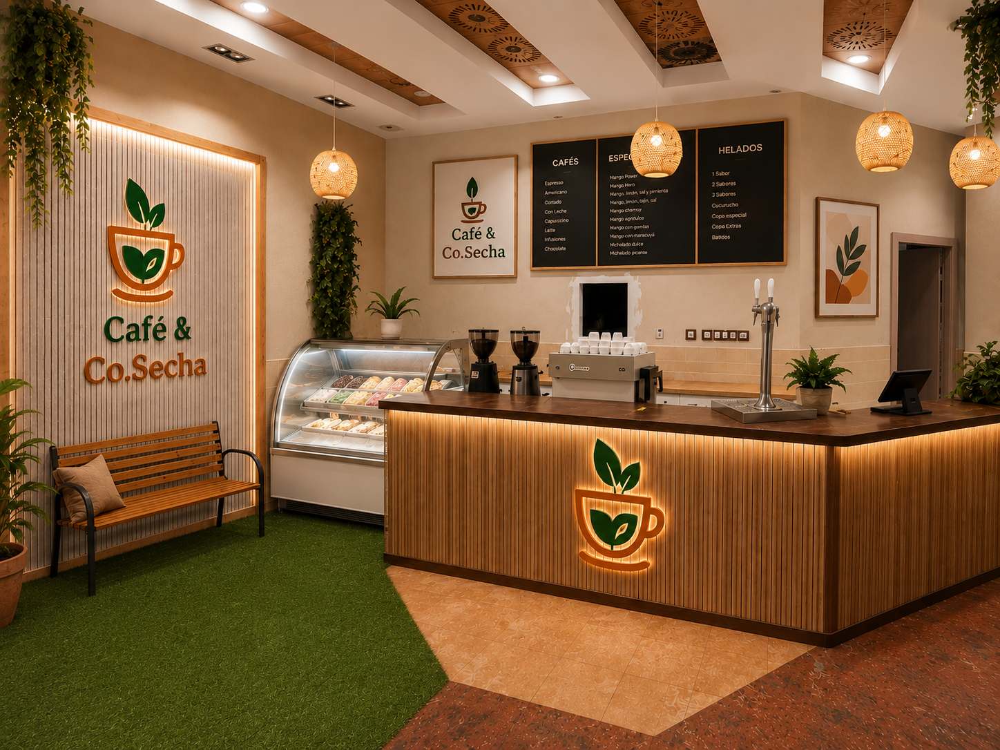

Mangos preparados
Mango Callejero, Fresa Loca, Verde Power, Fuego Mango y Diablo Verde.
Cafetería en Ontinyent
Bienvenidos a Café & Co.Secha, un lugar donde cada detalle esta pensado para que disfrutes sabores auténticos y experiencias que te hacen volver .

Lo que nos hace especiales
Mango Callejero, Fresa Loca, Verde Power, Fuego Mango y Diablo Verde.

Crujientes, dulces y preparadas con ese sabor que recuerda a casa.

Sabores frescos para disfrutar en la cafetería o para llevar.
Nuestra carta
Nuestra historia
En Café & Co.Secha creamos un espacio acogedor en Ontinyent, donde el café, la fruta y los sabores colombianos se encuentran en una carta fresca, cercana y preparada con cariño.
Nuestro espacio

Madera, luz cálida y detalles naturales.
Café, fruta y meriendas preparadas con cariño.
Para empezar el día con calma.
Sabores que recuerdan a casa.
Carrer del Pintor Segrelles 1
Centro Comercial El Teler, Piso 3
46870 · Ontinyent
Lunes a domingo
08:00 — 13:00
17:00 — 24:00
Instagram: @cafeco.secha2026
Facebook: Café & Co.Secha